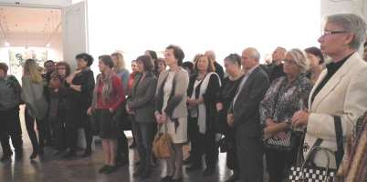
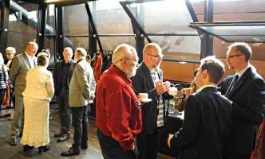
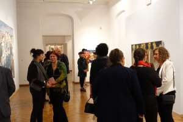
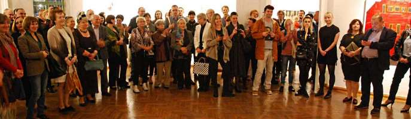
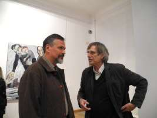
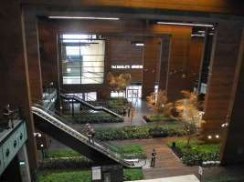
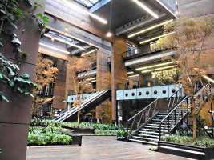
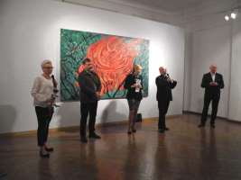
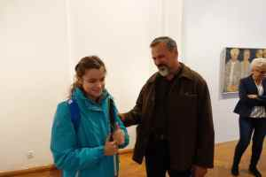

Exhibition Photographs
Rodyina kontra Imperium — Gdańsk
2016
Rodyina kontra Imperium — Gdańsk · 4
Rodyina kontra Imperium — Gdańsk · 5
Rodyina kontra Imperium — Gdańsk · 6

Rodyina kontra Imperium — Gdańsk · 7
Rodyina kontra Imperium — Gdańsk · 8

Rodyina kontra Imperium — Gdańsk · 9

Rodyina kontra Imperium — Gdańsk · 10
Rodyina kontra Imperium — Gdańsk · 11

Rodyina kontra Imperium — Gdańsk · 12

Rodyina kontra Imperium — Gdańsk · 13

Rodyina kontra Imperium — Gdańsk · 14

Rodyina kontra Imperium — Gdańsk · 15

Rodyina kontra Imperium — Gdańsk · 16

Rodyina kontra Imperium — Gdańsk · 17

Rodyina kontra Imperium — Gdańsk · 18

Rodyina kontra Imperium — Gdańsk · 19